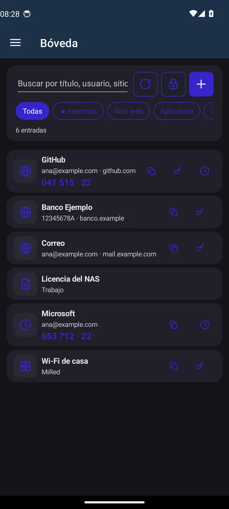
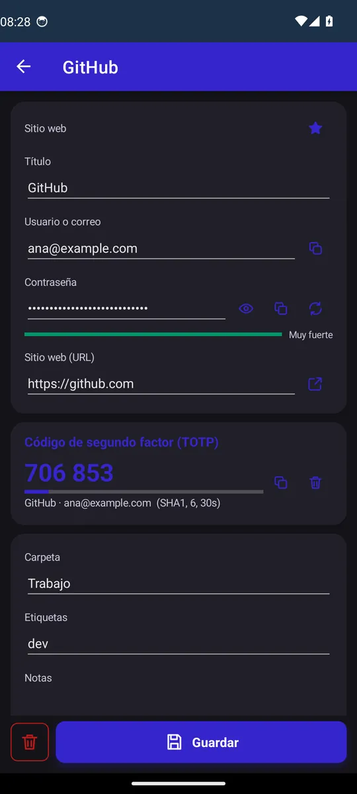
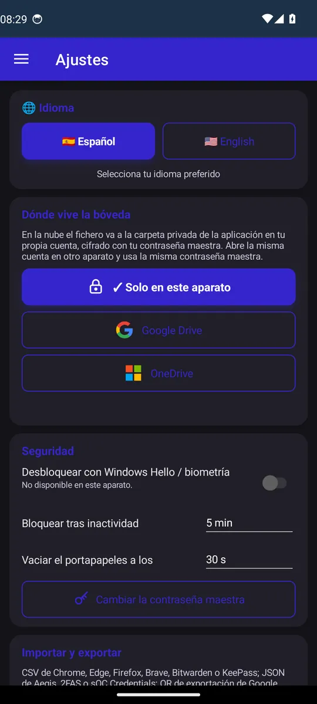
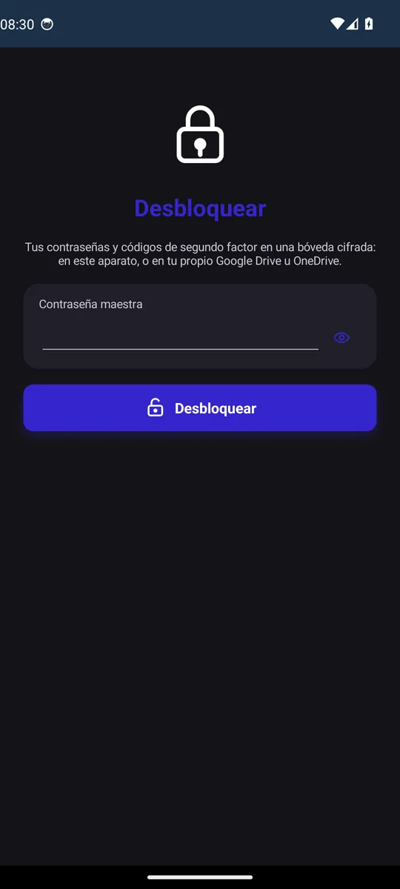

Android · Windows · Navegador
Tus contraseñas y códigos de verificación, cifrados y solo tuyos, en móvil y PC.
sOC Credentials guarda tus contraseñas y tus códigos de verificación en dos pasos en una bóveda cifrada con una única contraseña maestra, que solo conoces tú. No hay servidor nuestro ni cuenta nuestra: la bóveda vive en tu dispositivo o, si lo prefieres, en la carpeta privada de la aplicación dentro de tu propio Google Drive u OneDrive, siempre cifrada. Así tienes las mismas contraseñas en el móvil y en el PC.
Además de guardar, rellena. En Android se convierte en el servicio de autocompletar del sistema y te ofrece la cuenta adecuada en cada aplicación y en el navegador, y te propone guardar las nuevas. En Windows rellena las contraseñas de los programas de escritorio y, con su extensión para Edge, Chrome y Firefox, las de las webs, incluido el código de verificación de cada sitio.
Puedes traer todo lo que ya tenías: importa desde los navegadores, desde otros gestores de contraseñas y desde aplicaciones de códigos de verificación como Google Authenticator. Y sin anuncios, sin analítica y con licencia libre.
Plataformas
Android, Windows, extensión de navegador para Edge, Chrome y Firefox (en Windows)
Descarga
Licencia
MIT, gratuita
Código fuente
Soporte
sOC Credentials no recoge ningún dato: no hay servidor propio, ni cuentas, ni telemetría, ni anuncios. La bóveda se cifra en tu dispositivo con tu contraseña maestra y solo sale de él, cifrada, si tú eliges guardarla en tu propio Google Drive u OneDrive. La extensión del navegador no se conecta a internet: solo habla con la aplicación dentro de tu ordenador.
Capturas




La guía explica cómo ponerla en marcha, cada pantalla y cada opción, y las preguntas más habituales.